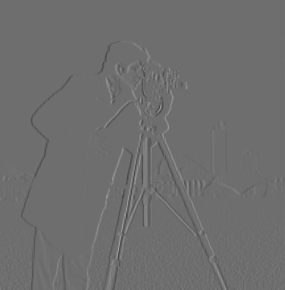
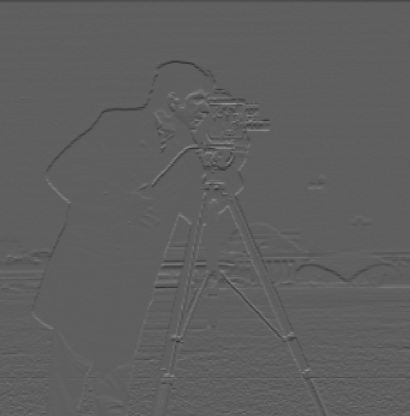

Figure 1: Original Image (Cameraman)

Figure 2: Gradient in X Direction

Figure 3: Gradient in Y Direction
In this project, we explore various filtering techniques and frequency domain manipulations in images. We implement edge detection using finite difference operators, image sharpening, hybrid images, and multiresolution blending.
In this part, we use finite difference operators for edge detection. We apply the difference operator to the image to obtain gradients in the x and y directions. Specifically, we convolve the original image with the kernels \( D_x = [1, -1] \) and \( D_y = [1, -1]^T \). We then compute the gradient magnitude by combining the gradients in x and y. Finally, we binarize the gradient magnitude image to produce a binary edge map.
The gradient magnitude is used to identify the edges within an image by measuring the intensity of changes between neighboring pixels. This process involves calculating the gradients (changes in pixel values) in both the horizontal (x) and vertical (y) directions.
1. Compute Gradients: The image is convolved with kernels, such as
Dx = [1, -1] for the x direction and Dy = [1, -1]T for the y direction.
2. Gradient Magnitude Calculation: The gradient magnitude at each pixel is then computed using:
Gradient Magnitude = √((Gx)² + (Gy)²)
where Gx and Gy are the gradients in the x and y directions, respectively.
3. Result: The result is an image where higher gradient magnitudes correspond to strong edges or transitions between regions of different intensity. Optionally, binarization can be applied to emphasize these edges.
This method highlights boundaries and structural changes within the image, making it a crucial step in edge detection and image analysis.
Figure 1: Original Image (Cameraman)
Figure 2: Gradient in X Direction
Figure 3: Gradient in Y Direction
Figure 4: Gradient Magnitude
Figure 5: Binarized Edge Image
To reduce noise and obtain smoother edges, we apply a Gaussian blur to the image before computing the gradients. We then compute the gradient magnitude and compare it with the one obtained using the Derivative of Gaussian (DoG) filters. The DoG filters are obtained by convolving the Gaussian kernel with the finite difference operators. This allows us to perform smoothing and differentiation in one step.
To reduce noise from edge detection, we apply a Gaussian blur to the original image before computing gradients. By convolving the Gaussian filter with partial derivative operators, we obtain DoG filters.
DoGx = G * Dx, DoGy = G * Dy
Applying these DoG filters smooths the image and then calculates the gradient in one step. The result is a cleaner edge detection compared to using only the difference operator.
Figure 6: Original Image (Cameraman)
Figure 7: Image after Gaussian Blur
Figure 8: Gradient in Y using DoG
Figure 9: Gradient Magnitude after Blurring
Figure 10: Gradient Magnitude using DoG
Figure 11: Gradient in X using DoG
Answer Question:The main difference between 1.1 and 1.2 is the thickness and clarity of the edges. The images with smoothing (DoG filter) show much clearer and more defined edges, resulting in thicker, more pronounced white lines. Additionally, the DoG filter produces less noise with smoother gradients and cleaner edges, where significant boundaries are more distinct and fewer spurious edges appear.
When we calculate the difference between the blurred gradient and the DoG gradient, the result is 0, confirming that both methods produce the same outcome.
We sharpen images by enhancing their high-frequency components. We subtract a blurred version of the image from the original to obtain the high frequencies. We then scale these high frequencies by a factor (alpha) and add them back to the original image. This unsharp masking technique enhances edges and details.
Image sharpening enhances high-frequency components. A Gaussian blur is applied to extract the low-frequency content, which is then subtracted from the original image to obtain high frequencies.
Sharpened Image = Original + α * (Original - Blurred)
The parameter α controls the intensity of sharpening. The sharpened image emphasizes edges and details more clearly.
Figure 12: Original Rock Image
Figure 13: Sharpened Rock Image (Alpha = 1.2)
Figure 14: Sharpened Rock Image (Alpha = 2)
Figure 15: Sharpened Image (Alpha = 1)
Figure 16: Sharpened Image (Alpha = 2)
Figure 17: Sharpened Image (Alpha = 3)
This section demonstrates blurring the original pineapple image and then applying different levels of sharpening. The original image is blurred to reduce detail, and then sharpening is applied incrementally to enhance the edges and restore clarity.
Figure 18: Original Pineapple Image
Figure 19: Blurred Pineapple Image
Figure 20: Sharpened Pineapple Image (alpha = 1)

Figure 21: Sharpened Pineapple Image (alpha = 2)
Figure 22: Sharpened Pineapple Image (alpha = 3)
Figure 23: Sharpened Image (Alpha = 5)
Figure 24: Sharpened Image (Alpha = 10)
This section demonstrates the process of blurring an image and then sharpening it. The original image is first blurred, losing some details, and then sharpened to enhance the edges and restore clarity.
In this section, I took a sharp image of a cathedral, blurred it, and then applied the unsharp masking technique to sharpen it again. Although sharpening an already sharp image after blurring can help restore some details, the final result is often not as good as the original due to the loss of finer details during blurring.
Figure 25: Original Sharp Image (Cathedral)
Figure 26: Blurred Cathedral Image
Figure 27: Resharpened Cathedral Image (Alpha = 2)
Figure 28: Original Curacao Image
Figure 29: Blurred Curacao Image
Figure 30: Sharpened Curacao Image
Hybrid images are created by combining the low-frequency content of one image with the high-frequency content of another. When viewed up close, the high-frequency image dominates, and when viewed from afar, the low-frequency image is more apparent. We experimented with grayscale and color images, switching the roles of the cat and human images.
Hybrid images are created by combining the high-frequency content of one image with the low-frequency content of another. When viewed up close, the high frequencies dominate, while from afar, the low frequencies are more visible.
The process involves low-pass filtering one image and high-pass filtering another, and then adding them together to form the hybrid image.
Figure 31: Original Image of Francesco
Figure 32: Original Image of Luca

Figure 33: Fourier Transform of Low-Pass Luca (Grayscale)

Figure 34: Fourier Transform of High-Pass Francesco (Grayscale)
Figure 35: Hybrid Image of Francesco and Luca
Figure 36: Fourier Transform of Francesco
Figure 37: Fourier Transform of Luca
Figure 38: Fourier Transform of Low-Pass Francesco
Figure 39: Fourier Transform of High-Pass Luca

Figure 40: Fourier Transform of Hybrid Image (Francesco and Luca)
The images below were rezised only for display to use less web memory
Figure 41: Nutmeg Original Image (Grayscale)
Figure 42: Derek Original Image (Grayscale)
Figure 43: Low-pass Filtered Nutmeg (Low Frequency)
Figure 44: High-pass Filtered Derek (High Frequency)
Figure 45: Hybrid Image (Cat as Low Frequency)
Figure 46: Fourier Transforms for my favorite image: images above
other versions of the cat by far and cat by close are below
Figure 47: Hybrid Image
Figure 48: Hybrid Image
Figure 49: Nutmeg Original Image
Figure 50: Derek Original Image
Figure 51: Hybrid Image (Cat as High Frequency)
Color images often produce better hybrid results than grayscale because color channels add more information to distinguish between the high and low frequencies of the images. This additional detail enhances the effect of the hybrid, making the two combined images more recognizable at different viewing distances.
In this section, I created hybrid images using pictures of myself and my friend. When you view the images up close, you can see one image more clearly, but when you zoom out, another image starts to dominate. You need to zoom in and out quite a bit to notice the effect, but it becomes apparent as you change the viewing distance.
The smile its hard to percieve in both of the figures. For figure 54/55 th right we see Vanessa at high frequencies and francesco at low frequencies
Figure 52: Original Image of Francesco (Grayscale)
Figure 53: Original Image of Vanessa (Grayscale)
Figure 54: Hybrid Image of Francesco and Vanessa (Grayscale)

Figure 55: Hybrid Image of Francesco and Vanessa (Grayscale) with different sigma, raw image AND DIFFERENT PERCEPTION
Figure 57: Low-pass Filtered Francesco (Low Frequency, Color)
Figure 58: High-pass Filtered Vanessa (High Frequency, Color)
Figure 59: Hybrid Image of Francesco and Vanessa (Color)
In this section, I created hybrid images using two different expressions of Mufasa. The first image shows Mufasa smiling, while the second one captures him screaming. The hybrid image combines these two expressions, where you can see the smile up close, but the scream becomes more dominant as you zoom out.
Here we can see a fail, the reason is that the images have a very different shape, and the tones are also severely different
Figure 60: Original Image of Mufasa Smiling
Figure 61: Original Image of Mufasa Screaming
Figure 62: Hybrid Image of Mufasa (Smile and Scream)
In this section, I attempted to create a hybrid image using a speaker and a mug. Similar to the Mufasa example, this pair did not work well. The primary reason for the failure is that the two objects do not share enough structural similarity, which is essential for hybrid images to blend naturally. The distinct shapes and contours of the speaker and mug cause the hybrid to be confusing and less recognizable from different viewing distances.
Figure 63: Original Image of Speaker
Figure 64: Original Image of Mug
Figure 65: Hybrid Image of Speaker and Mug
We create Gaussian and Laplacian stacks for the apple and orange images. The Gaussian stack is constructed by repeatedly applying a Gaussian blur to the image. The Laplacian stack is obtained by subtracting each level of the Gaussian stack from the previous level, capturing the high-frequency details at each level.
Gaussian and Laplacian stacks represent images at different frequency bands. A Gaussian stack is created by successively applying a Gaussian filter to an image. The Laplacian stack is the difference between levels of the Gaussian stack.
These stacks are useful for multiresolution blending, where different frequency components are blended seamlessly.

Figure 66: Original Apple Image
Figure 67: Apple Gaussian and Laplacian Stacks

Figure 68: Original Orange Image

Figure 69: Orange Gaussian and Laplacian Stacks
Multiresolution blending uses Gaussian and Laplacian stacks to combine two images smoothly. An irregular mask is applied to control the blend, allowing for smooth transitions between images.
Each level of the Laplacian stacks of the images is blended according to the Gaussian stack of the mask, and then the results are summed to produce the final blended image.
Using the Gaussian and Laplacian stacks, we blend the apple and orange images to create the "oraple." We use a mask to define the blending region and combine the Laplacian stacks of both images according to the mask at each level. This results in a seamless blend across the images.
Figure 70: Blended Oraple Image
Figure 71: Blending Mask Used
In this section, I blended an image of a dog with grass using an irregular mask. The mask was created in Adobe Photoshop, then binarized for precise blending. The multiresolution blending process involves several steps:
Figure 72: Original Image of Grass
Figure 73: Original Image of Dog
Figure 74: Binarized Mask for Blending
Figure 75: Final Blended Image of Dog and Grass
Figure 76: Laplacian, Gaussian, and Blended Pyramids for Dog, Grass, and Mask
In this section, I blended an image of my face with an X shape using an irregular mask. The mask was carefully designed and binarized to control the blending process.
One of the most challenging aspects of this part of the project was creating the irregular mask and ensuring that the images were perfectly aligned. Crafting the mask in Adobe Photoshop required precision to ensure smooth transitions between the two images. After creating the mask, binarizing it to ensure accurate blending at each level was essential. Another difficulty was making sure the images of my face and the X shape were well-aligned so that the multiresolution blending produced seamless results. Misalignment could have resulted in awkward blending or artifacts, which I had to carefully avoid by adjusting the positions and scaling the images during the process.
Figure 77: Original Image of X Shape

Figure 78: Original Image of My Face
Figure 79: Binarized Mask for Blending
Figure 80: Final Blended Image of My Face and X Shape
Figure 81: Laplacian, Gaussian, and Blended Pyramids for Face, X Shape, and Mask
Through this project, I learned how frequency domain techniques can be applied to image processing tasks such as edge detection, image sharpening, hybrid images, and blending. Understanding how to manipulate different frequency components allows for powerful image transformations and effects.